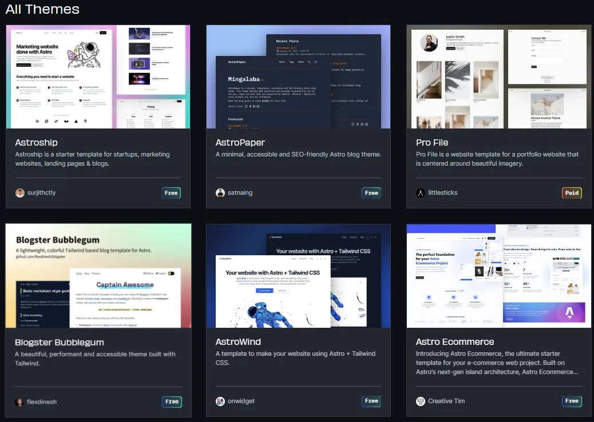
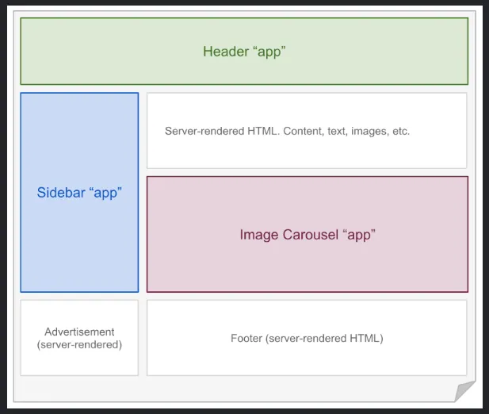
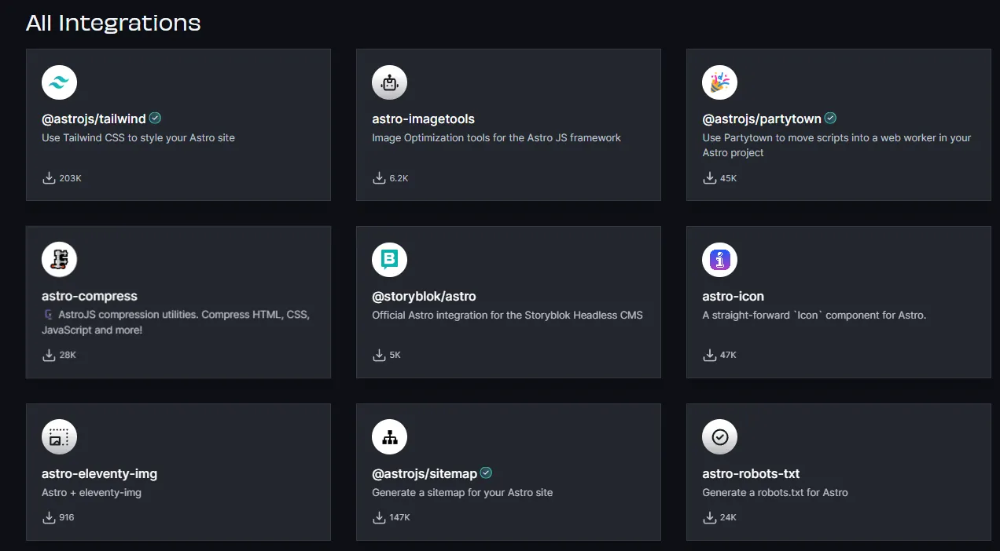

As web developers, we strive to build the fastest and most efficient websites possible. This means finding the right tools and technologies to help achieve our performance goals.
A new tool that has come onto the scene relatively recently is Astro JS. Astro is a new static site generator that has emerged as a popular choice among performance-driven web developers. According to their website, “Astro builds fast content sites, powerful web applications, dynamic server APIs, and everything in between.” Due to their innovative front-end architecture approach, Astro allows creators to generate highly performant websites with minimal overhead.
In this article, we’ll take a deep dive into Astro. We’ll understand Astro’s origin, the primary use cases, unique features, and whether or not it is worth your time.
Astro was created in 2021 by Fred K. Schott, who was concerned about the increasing complexity and bloat of existing frontend frameworks. He believed simple static sites didn’t need all the bells and whistles and should load quickly and efficiently. So, he created a static site generator to meet these needs.
Performance and simplicity were essential to Fred when building Astro. He didn’t want to compete with popular frontend frameworks but rather collaborate with them. This led to the BYOF (Bring Your Own Framework) concept, which allows developers to reuse components from React, Svelte, Vue, and other frameworks while benefiting from a static site’s performance advantages.
Another key innovation is an architectural concept called islands. We’ll explore this in more detail later.
How is he going to maintain it going forward? It has been open sourced to the developer community. Their website states, “Astro is and always will be free.” So, as long as the community can continue to see the value in Astro, it will continue to evolve and become more valuable over time.
If you notice the underlying theme here, it’s communicating content with the world. You need the bare minimum functionality for each use case, want it to look good on any device, and want pages to load quickly. Astro is perfect for this.
Astro has many great themes to help you get up and running quickly.

https://astro.build/themes/I couldn’t create an Astro article without mentioning island architecture. The island architecture is the foundation of what makes Astro unique. What is it? It divides web pages into separate components, each of which can be rendered on the server or in the browser, depending on what is faster. This allows Astro to generate highly performant websites with minimal overhead.

https://jasonformat.com/islands-architecture/A key benefit of this architecture is that components can be loaded in parallel. This means the browser can load multiple components simultaneously and hydrate them in isolation. The load time of a page will be improved significantly, especially for pages with a lot of JavaScript.
Astro gives developers more control over how their pages are rendered. For example, client directives allow an explicit order in which you render your components. Say you have a JavaScript-intensive carousel at the bottom of your page that is not entirely essential to the user experience. You can render this component only when the user scrolls to that component. Without that component being a part of the first load, the initial loading of the page will be significantly faster (improved Time-to-Interactive metric).
A few other perks of Astro’s island architecture are reduced bandwidth usage and improved Search Engine Optimization (SEO).
Astro was designed with ease of use in mind. Because the syntax is similar to existing frontend frameworks, you can get started quickly if you know HTML, CSS, and JS. Also, as mentioned before, if you want to use components you have already written in other frameworks, thanks to the component-based architecture and BYOF (Bring Your Own Framework), you can do that. This makes it easy to migrate existing websites to Astro or build hybrid websites that use many different components from different frameworks.
Overall, Astro is a very easy-to-use SSG well-suited for beginners and experienced developers.
Astro is designed to be highly customizable. It can be used with any front-end framework, build tool, or hosting provider. This makes it easy to tailor Astro to your specific needs and preferences.

https://astro.build/integrations/Astro is designed to be highly customizable. It can be used with any front-end framework, build tool, or hosting provider. This makes it easy to tailor Astro to your specific needs and preferences.
Astro also has a rich ecosystem of third-party plugins and integrations. This means you can find plugins for anything you need, from adding authentication to your site to generating dynamic content.
Astro is a great choice if you’re looking for a highly customizable and extensible static site generator.
Astro has a vibrant and active community of contributors. This community is supported by the Astro Community Awards program, which rewards top contributors with financial compensation. In 2022, the Astro Community Awards program paid almost $8500 to contributors.
The Astro community is also very active on Discord. The Discord server is a great place to ask questions, get help, and collaborate with other Astro users.
So the question remains: is Astro worth learning? If you’re a web developer who wants to build fast, performant, customizable static sites, then the answer is a resounding yes.
Astro is easy to learn and use, even if you’re unfamiliar with other static site generators. Its island architecture and BYOF (Bring Your Own Framework) pattern allow you to build websites that meet your needs.Astro also has a vibrant and active community of contributors, which means a wealth of support is available if you need it.
I hope you’ve enjoyed learning a bit about Astro and how you can use it to improve your static sites today!
Thank you.